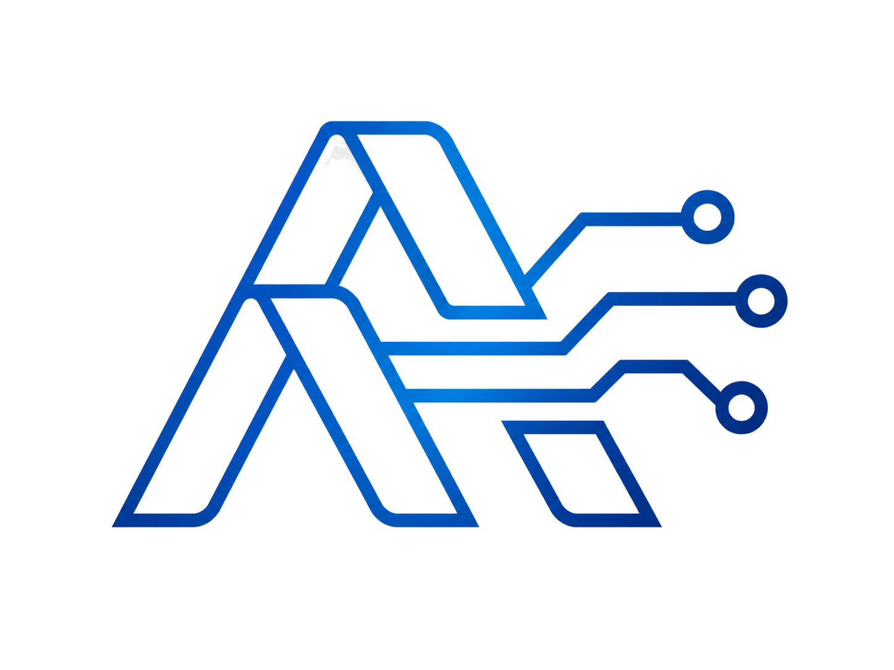

AI Circuit Architect — System Architecture
Qwen · Agent Society
Client
👤 User
Writes a plain-English hardware brief · approves the architecture before generation (human-in-the-loop)
⇄
Web UI · single page
FastAPI-served, Alpine.js · live “metro-rail” pipeline view + Agent-Society chat
↓
Application core
Orchestrator (FastAPI)
Runs the pipeline stage by stage · one-click auto-run or step-by-step sign-off · threads guidance & rework between agents
↓
Agent society · six roles, model tier per agent
RQ
Requirements
qwen-plus
→
AR
Architect
qwen-plus
⇄
rework
CR
Design Critic
qwen-max
→
AB
Arbitration
qwen-max
→
PE
PCB Engineer
qwen-plus
⇄
rework
PC
PCB Critic
qwen-max
Task decomposition across roles · conflict resolution via Critic→Architect & PCB-Critic→PCB-Engineer rework loops + arbitration
↕ every agent call
API Cost Guard — one chokepoint
Hard USD budget · per-call token caps · rate limits · response cache · scripted Mock-Mode fallback on any limit/error
→
Qwen Cloud API
OpenAI-compatible endpoint · qwen-plus / qwen-max / qwen-turbo (tier chosen per role)
↓ final approved design
Generate & verify
KiCad Generator
Hierarchical sheets, block diagram, power-port symbols, sheet pins, title blocks
→
kicad-cli (KiCad 10)
Opens the project · structural ERC · renders SVG/PDF — real validation, not a claim
→
Outputs
KiCad project ZIP · PDF report (WeasyPrint) · 3-state verification badge
↓
Infrastructure
Docker one image incl. KiCad runtime
·
GitHub Actions → GHCR CI build & registry
·
Alibaba Cloud ECS Linux VM, runs the containers
·
Caddy reverse proxy · HTTPS (Let’s Encrypt)
① Decomposition
Six specialist agents, each a distinct role and model tier
② Conflict resolution
Two live Critic→worker rework loops + an arbitration step
③ Measurable gain
+3.2 / 12 coverage over a single-agent baseline (deterministic rubric)